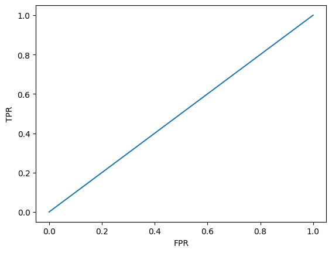
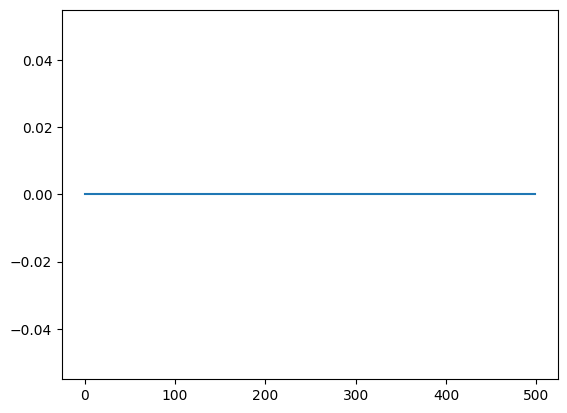
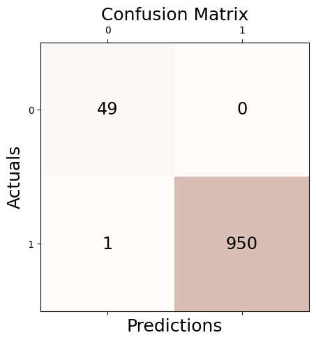

import numpy as np
import matplotlib.pyplot as plt
import matplotlib
import pandas as pd
import random
import warnings
warnings.simplefilter("ignore", np.ComplexWarning)
from haversine import haversine
from IPython.display import HTML
import plotly.graph_objects as go
import copy
import tqdm
from rpy2.robjects.packages import importr
from rpy2.robjects.vectors import FloatVector
from pygsp import graphs, filters, plotting, utils
from sklearn.metrics import confusion_matrix
from sklearn.metrics import precision_score, recall_score, f1_score, accuracy_score
from sklearn.neighbors import LocalOutlierFactor
from pyod.models.knn import KNN
from pyod.models.cblof import CBLOF
from sklearn import svm
from pyod.models.mcd import MCD
from pyod.models.feature_bagging import FeatureBagging
from pyod.models.abod import ABOD
from alibi_detect.od import IForest
from pyod.models.hbos import HBOS
from pyod.models.sos import SOS
from pyod.models.so_gaal import SO_GAAL
from pyod.models.mo_gaal import MO_GAAL
from pyod.models.lscp import LSCP
from pyod.models.lof import LOF
from pyod.models.ocsvm import OCSVM
from sklearn.svm import OneClassSVM[GODE]AUC
Import
Purpose of Post - ROC/AUC
plt.plot(np.array([0,0.2,0.4,0.6,0.8,1.0]),np.array([0,0.2,0.4,0.6,0.8,1.0]))
plt.ylabel('TPR')
plt.xlabel('FPR')Text(0.5, 0, 'FPR')
x 축 (FPR) = FP / (FP + TN)
y 축 (TPR) = TP / (TP + FN)
로 만들어진 곡선이 ROC 곡선, 그 아래 면적이 AUC,
Class
class Conf_matrx:
def __init__(self,original,compare):
self.original = original
self.compare = compare
def conf(self,name):
self.conf_matrix = confusion_matrix(self.original, self.compare)
fig, ax = plt.subplots(figsize=(5, 5))
ax.matshow(self.conf_matrix, cmap=plt.cm.Oranges, alpha=0.3)
for i in range(self.conf_matrix.shape[0]):
for j in range(self.conf_matrix.shape[1]):
ax.text(x=j, y=i,s=self.conf_matrix[i, j], va='center', ha='center', size='xx-large')
plt.xlabel('Predictions', fontsize=18)
plt.ylabel('Actuals', fontsize=18)
plt.title('Confusion Matrix', fontsize=18)
plt.show()
self.acc = accuracy_score(self.original, self.compare)
self.pre = precision_score(self.original, self.compare)
self.rec = recall_score(self.original, self.compare)
self.f1 = f1_score(self.original, self.compare)
print('Accuracy: %.3f' % self.acc)
print('Precision: %.3f' % self.pre)
print('Recall: %.3f' % self.rec)
print('F1 Score: %.3f' % self.f1)class Linear:
def __init__(self,df):
self.df = df
self.y = df.y.to_numpy()
self.x = df.x.to_numpy()
self.n = len(self.y)
self.W = w
def _eigen(self):
d= self.W.sum(axis=1)
D= np.diag(d)
self.L = np.diag(1/np.sqrt(d)) @ (D-self.W) @ np.diag(1/np.sqrt(d))
self.lamb, self.Psi = np.linalg.eigh(self.L)
self.Lamb = np.diag(self.lamb)
def fit(self,threshold=0,sd=20): # fit with ebayesthresh
self._eigen()
self.ybar = self.Psi.T @ self.y # fbar := graph fourier transform of f
self.power = self.ybar**2
ebayesthresh = importr('EbayesThresh').ebayesthresh
self.power_threshed=np.array(ebayesthresh(FloatVector(self.power),sd=sd))
self.ybar_threshed = np.where(self.power_threshed>threshold,self.ybar,0)
self.yhat = self.Psi@self.ybar_threshed
self.df = self.df.assign(yHat = self.yhat)
self.df = self.df.assign(Residual = self.df.y- self.df.yHat)class Orbit:
def __init__(self,df):
self.df = df
self.f = df.f.to_numpy()
self.x = df.x.to_numpy()
self.y = df.y.to_numpy()
self.n = len(self.f)
self.theta= None
def get_distance(self):
self.D = np.zeros([self.n,self.n])
locations = np.stack([self.x, self.y],axis=1)
for i in tqdm.tqdm(range(self.n)):
for j in range(i,self.n):
self.D[i,j]=np.linalg.norm(locations[i]-locations[j])
self.D = self.D + self.D.T
def get_weightmatrix(self,theta=1,beta=0.5,kappa=4000):
self.theta = theta
dist = np.where(self.D < kappa,self.D,0)
self.W = np.exp(-(dist/self.theta)**2)
def _eigen(self):
d= self.W.sum(axis=1)
D= np.diag(d)
self.L = np.diag(1/np.sqrt(d)) @ (D-self.W) @ np.diag(1/np.sqrt(d))
self.lamb, self.Psi = np.linalg.eigh(self.L)
self.Lamb = np.diag(self.lamb)
def fit(self,threshold=0,sd=5,ref=20): # fit with ebayesthresh
self._eigen()
self.fbar = self.Psi.T @ self.f # fbar := graph fourier transform of f
self.power = self.fbar**2
ebayesthresh = importr('EbayesThresh').ebayesthresh
self.power_threshed=np.array(ebayesthresh(FloatVector(self.power),sd=sd))
self.fbar_threshed = np.where(self.power_threshed>threshold,self.fbar,0)
self.fhat = self.Psi@self.fbar_threshed
self.df = self.df.assign(fHat = self.fhat)
self.df = self.df.assign(Residual = self.df.f- self.df.fHat)
self.bottom = np.zeros_like(self.f)
self.width=0.05
self.depth=0.05class BUNNY:
def __init__(self,df):
self.df = df
self.f = df.f.to_numpy()
self.z = df.z.to_numpy()
self.x = df.x.to_numpy()
self.y = df.y.to_numpy()
self.noise = df.noise.to_numpy()
self.fnoise = self.f + self.noise
self.W = _W
self.n = len(self.f)
self.theta= None
def _eigen(self):
d= self.W.sum(axis=1)
D= np.diag(d)
self.L = np.diag(1/np.sqrt(d)) @ (D-self.W) @ np.diag(1/np.sqrt(d))
self.lamb, self.Psi = np.linalg.eigh(self.L)
self.Lamb = np.diag(self.lamb)
def fit(self,threshold=0,sd=5,ref=6): # fit with ebayesthresh
self._eigen()
self.fbar = self.Psi.T @ self.fnoise # fbar := graph fourier transform of f
self.power = self.fbar**2
ebayesthresh = importr('EbayesThresh').ebayesthresh
self.power_threshed=np.array(ebayesthresh(FloatVector(self.power),sd=sd))
self.fbar_threshed = np.where(self.power_threshed>threshold,self.fbar,0)
self.fhat = self.Psi@self.fbar_threshed
self.df = self.df.assign(fnoise = self.fnoise)
self.df = self.df.assign(fHat = self.fhat)
self.df = self.df.assign(Residual = self.df.f + self.df.noise - self.df.fHat)
self.bottom = np.zeros_like(self.f)
self.width=0.05
self.depth=0.05Linear
np.random.seed(6)
epsilon = np.around(np.random.normal(size=1000),15)
signal = np.random.choice(np.concatenate((np.random.uniform(-7, -5, 25).round(15), np.random.uniform(5, 7, 25).round(15), np.repeat(0, 950))), 1000)
eta = signal + epsilon
outlier_true_one_1 = signal.copy()
outlier_true_one_1 = list(map(lambda x: -1 if x!=0 else 1,outlier_true_one_1))x_1 = np.linspace(0,2,1000)
y1_1 = 5 * x_1
y_1 = y1_1 + eta # eta = signal + epsilon
_df=pd.DataFrame({'x':x_1, 'y':y_1})w=np.zeros((1000,1000))
for i in range(1000):
for j in range(1000):
if i==j :
w[i,j] = 0
elif np.abs(i-j) <= 1 :
w[i,j] = 1GODE_Linear
_Linear = Linear(_df)
_Linear.fit(threshold=0,sd=20)plt.plot(_Linear.power_threshed[500:1000])
outlier_simul_one = (_Linear.df['Residual']**2).tolist()
sorted_data = sorted(outlier_simul_one,reverse=True)
index = int(len(sorted_data) * 0.05)
threshold = sorted_data[index]
outlier_simul_one = list(map(lambda x: -1 if x > threshold else 1,outlier_simul_one))outlier_simul_one.count(1)950outlier_simul_one.count(-1)50_conf = Conf_matrx(outlier_true_one_1,outlier_simul_one)
_conf.conf("GODE")Accuracy: 0.999
Precision: 0.999
Recall: 1.000
F1 Score: 0.999_conf.conf_matrix[0][1] / (_conf.conf_matrix[0][1] + _conf.conf_matrix[0][0])0.0196078431372549y축(TPR)
_conf.conf_matrix[1][1] / (_conf.conf_matrix[1][1] + _conf.conf_matrix[0][0])0.94994994994995LOF_Linear
np.random.seed(77)
clf = LocalOutlierFactor(contamination=0.05)_conf = Conf_matrx(outlier_true_one_1,clf.fit_predict(_df))
_conf.conf("LOF (Breunig et al., 2000)")
Accuracy: 0.991
Precision: 0.995
Recall: 0.996
F1 Score: 0.995x축(FPR)
_conf.conf_matrix[0][0] / (_conf.conf_matrix[0][0] + _conf.conf_matrix[0][1])0.9019607843137255y축(TPR)
_conf.conf_matrix[0][1] / (_conf.conf_matrix[0][0] + _conf.conf_matrix[0][1])0.09803921568627451Orbit
np.random.seed(1212)
nepsilon = np.around(np.random.normal(size=1000),15)
signal = np.random.choice(np.concatenate((np.random.uniform(-7, -5, 25).round(15), np.random.uniform(5, 7, 25).round(15), np.repeat(0, 950))), 1000)
eta = signal + epsilon
np.random.seed(777)
pi=np.pi
n=1000
ang=np.linspace(-pi,pi-2*pi/n,n)
r=5+np.cos(np.linspace(0,12*pi,n))
vx=r*np.cos(ang)
vy=r*np.sin(ang)
f1=10*np.sin(np.linspace(0,6*pi,n))
f = f1 + eta
_df = pd.DataFrame({'x' : vx, 'y' : vy, 'f' : f})
outlier_true_one = signal.copy()
outlier_true_one = list(map(lambda x: -1 if x!=0 else 1,outlier_true_one))GODE_Orbit
_Orbit = Orbit(_df)
_Orbit.get_distance()100%|██████████| 1000/1000 [00:01<00:00, 561.32it/s]_Orbit.get_weightmatrix(theta=(_Orbit.D[_Orbit.D>0].mean()),kappa=2500)
_Orbit.fit(threshold=0,sd=15,ref=20)outlier_simul_one = (_Orbit.df['Residual']**2).tolist()
sorted_data = sorted(outlier_simul_one,reverse=True)
index = int(len(sorted_data) * 0.05)
threshold = sorted_data[index]
outlier_simul_one = list(map(lambda x: -1 if x > threshold else 1,outlier_simul_one))outlier_simul_one.count(1)950outlier_simul_one.count(-1)50_conf = Conf_matrx(outlier_true_one,outlier_simul_one)
_conf.conf("GODE")
Accuracy: 0.999
Precision: 1.000
Recall: 0.999
F1 Score: 0.999x축(FPR)
_conf.conf_matrix[0][0] / (_conf.conf_matrix[0][0] + _conf.conf_matrix[0][1])1.0y축(TPR)
_conf.conf_matrix[0][1] / (_conf.conf_matrix[0][0] + _conf.conf_matrix[0][1])0.0